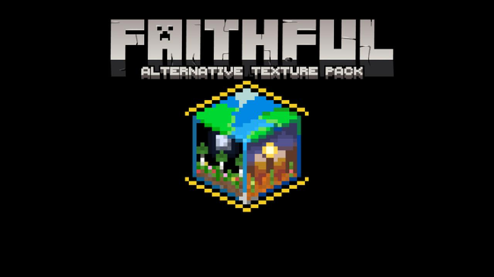
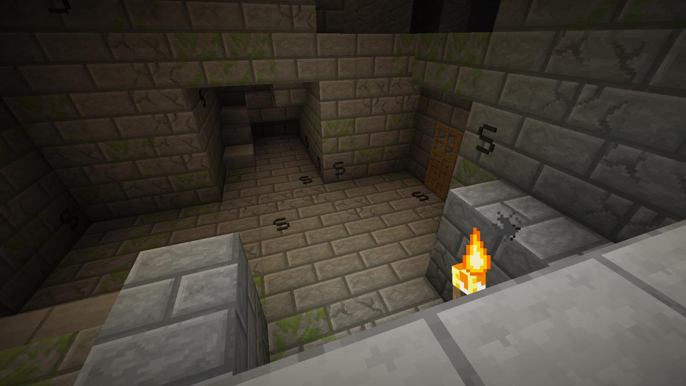

<div class="links-content">
  <h2>Faithful Alternative</h2>
  <p>
    Currently work in progress.
  </p>
  <a href="https://www.planetminecraft.com/texture_pack/faithful-alternative-texture/" class="btn btn-block btn-success" role="button">PlanetMinecraft</a>
</div>
<hr>

<div class="links-content">
  <h2>Silverfish Detector</h2>
  <p>
    With this pack, you can place the Faithful 3D above or below.
  </p>
  <a href="https://www.curseforge.com/minecraft/texture-packs/silverfish-detector" class="btn btn-block btn-success" role="button">CurseForge</a>
</div>
<hr>

<div class="links-content">
  <h2>Underwater</h2>
  <p>
    With this pack, you can place the Faithful 3D above or below.
  </p>
  <a href="https://www.curseforge.com/minecraft/texture-packs/underwater" class="btn btn-block btn-success" role="button">CurseForge</a>
</div>
